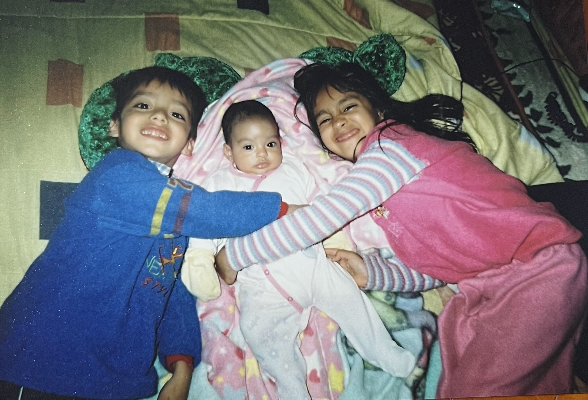
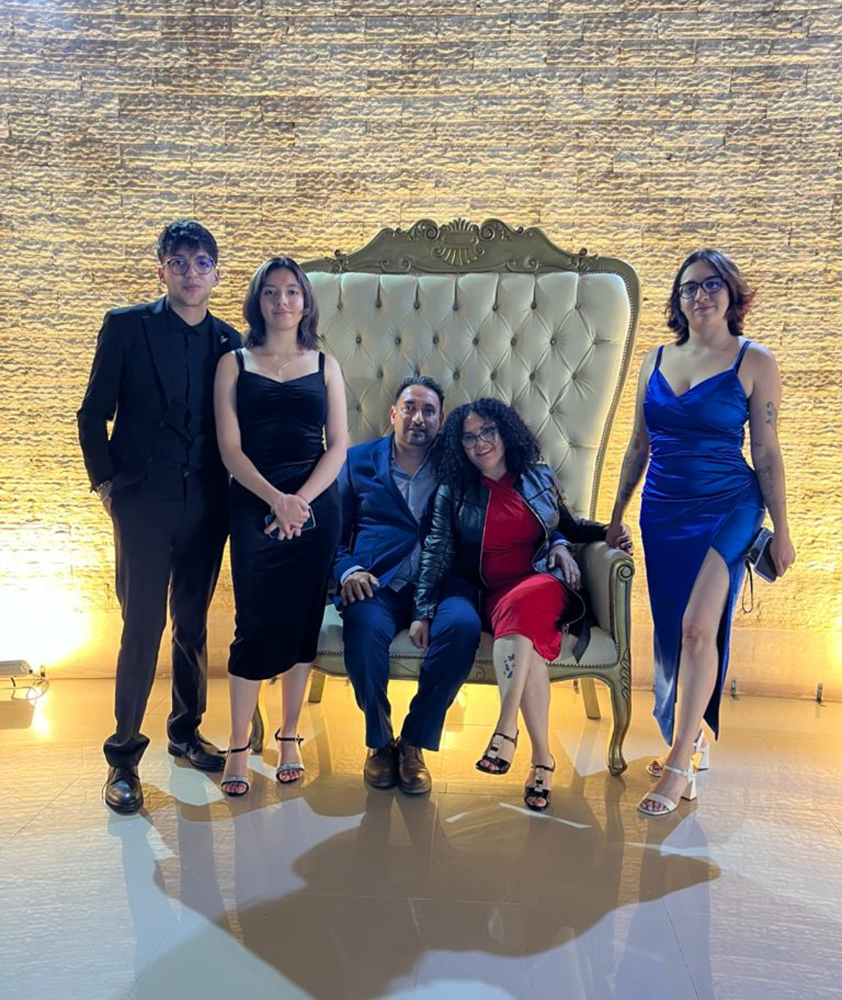
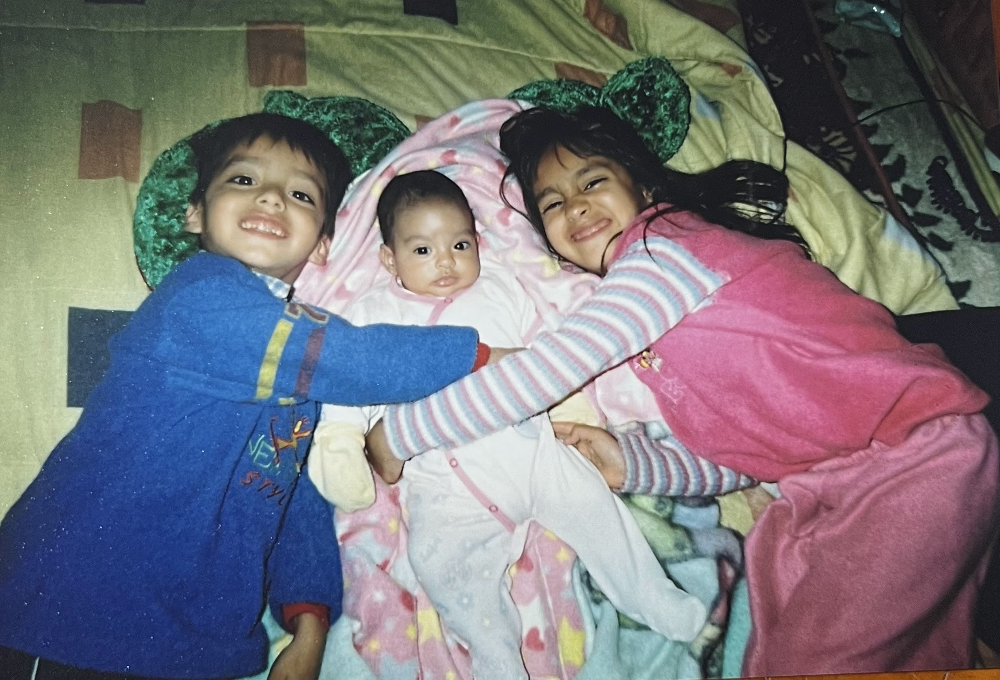
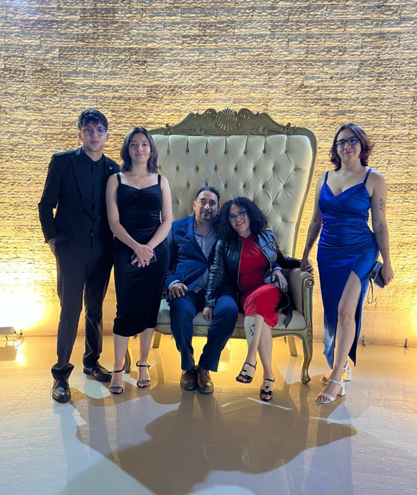

Naci el 22 de abril del 2008 en el Estado de Mexico naci prematura y mi madre (Angelina Judith Bayardo Esquivel) tuvo muchas complicaciones con mi nacimiento tuvo que ser cesaria por la misma razon mi padre (Hector Ruiz Cruz) estuvo muy preocupado por mi mama y las complicaciones que podria tener pero temprano ese dia llegue al mundo sana. en ese entonces viviamos en Lerma (donde aun se ubica mi casa) al llegar pude conocer a mis dos hermanos mayores (Angelina Judith Ruiz Bayardo y Hector Lino Ruiz Bayardo)nuestro nucleo familiar era muy reducido por lo mismo que viviamos lejos y la mayoria del tiempo solo eramos nosotros cinco pero poco despues la estadia lejos de todo se complicaria ya que mi padre tenia que realizar un recorrido bastante peligroso para su trabajo mis padres decidieron que lo mejor seria regresar a vivir a La Retama lugar donde recido desde los 3 años de edad esto marcaria un inicio a otra etapa de vida. por problemas financieros mi madre tuvo que trabajar y por ello me estuvo cuidando diferentes personas como mi prima,tia , etc. para ese entonces yo estaba en el kinder y tambien me cuidaba aveces mi abuelita fue una etapa muy dificil para mi madre y mi padre fue una racha economica muy dificil y para mis heermanos tambien estar sin nuestros padres era algo dificil pero necesario. Pero apesar de todo eramos niños felices. Algunas de las cosas que mas marcaron mi infancia fue el estrecho lazo que forme con mis hermanos es una de las cosas que mas formo mi personalidad y mi forma de ver al mundo porque a final de cuentas siempre nos tendremos el uno al otro,tuvimos peleas y muchos juegos que mis hermanos hacian para hacerme sentir mas apreciada e incluida ya que siempre hemos tenido problemas con nuestra familia.Eso fue un punto importante en nuestro nucleo familiar poruqe creaba disputaas entre nuestra familia pero aun con todo esto creci rodeada de amor y cariño.  en el 2014 entre a la primaria donde estudiaba mi hermano mayor y ahi estube hasta 5 año ya que por cuestiones de la cuarentena tuve que culminar mi escuela en linea y asi mismo empezar la secundaria en linea.Mi primer y mediados del segundo años de secundaria me la pase en linea lo cual me permitio tenner mucho mas tiempo con mi familia e intentar muchas nuevas cosas ya que es algo que me gusta mucho el experimentar con nuevas actividades.Al ingresar a la secundaria fue una etapa muy linda donde conoci a muchas personas nuevas y me reuni con amistades antiguas y descubri que me encantaria ser arquitecta y eso fue un paso grande a autodescubrirme ya que toda mi vida pensaba que el trabajo tenia que ser algo que te diera mucho dinero ( la mayoria de mi vida quise ser cirujana para tener mucho dinero) y mi taller tecnico era diseño grafico en el cual mi maestro me ayudo a mejorar en dicha carrera y decidi estudiar para entrar a una preparatoria que me podria guiar para entrar a dicha carrera. Estuve medio año en un curso para mi examen comipems en donde conoci a una persona maravillosa que hasta el dia de hoy la llamo mejor amiga,despues de muchos sacrificios logre entrar ala preparatoria que yo queria logrando una de mis metas a corto plazo. y aqui me vez ya llevo un año en esta preparatoria en donde e tenido mucho estres y malestares pero donde conoci a personas increibles que hacen mi estancia divertida y llevadera solo espero que esta escuela si sea el escalon que imagine y espere. 
por problemas financieros mi madre tuvo que trabajar y por ello me estuvo cuidando diferentes personas como mi prima,tia , etc. para ese entonces yo estaba en el kinder y tambien me cuidaba aveces mi abuelita fue una etapa muy dificil para mi madre y mi padre fue una racha economica muy dificil y para mis heermanos tambien estar sin nuestros padres era algo dificil pero necesario. Pero apesar de todo eramos niños felices.
Algunas de las cosas que mas marcaron mi infancia fue el estrecho lazo que forme con mis hermanos es una de las cosas que mas formo mi personalidad y mi forma de ver al mundo porque a final de cuentas siempre nos tendremos el uno al otro,tuvimos peleas y muchos juegos que mis hermanos hacian para hacerme sentir mas apreciada e incluida ya que siempre hemos tenido problemas con nuestra familia.Eso fue un punto importante en nuestro nucleo familiar poruqe creaba disputaas entre nuestra familia pero aun con todo esto creci rodeada de amor y cariño.
 en el 2014 entre a la primaria donde estudiaba mi hermano mayor y ahi estube hasta 5 año ya que por cuestiones de la cuarentena tuve que culminar mi escuela en linea y asi mismo empezar la secundaria en linea.Mi primer y mediados del segundo años de secundaria me la pase en linea lo cual me permitio tenner mucho mas tiempo con mi familia e intentar muchas nuevas cosas ya que es algo que me gusta mucho el experimentar con nuevas actividades.Al ingresar a la secundaria fue una etapa muy linda donde conoci a muchas personas nuevas y me reuni con amistades antiguas y descubri que me encantaria ser arquitecta y eso fue un paso grande a autodescubrirme ya que toda mi vida pensaba que el trabajo tenia que ser algo que te diera mucho dinero ( la mayoria de mi vida quise ser cirujana para tener mucho dinero) y mi taller tecnico era diseño grafico en el cual mi maestro me ayudo a mejorar en dicha carrera y decidi estudiar para entrar a una preparatoria que me podria guiar para entrar a dicha carrera. Estuve medio año en un curso para mi examen comipems en donde conoci a una persona maravillosa que hasta el dia de hoy la llamo mejor amiga,despues de muchos sacrificios logre entrar ala preparatoria que yo queria logrando una de mis metas a corto plazo. y aqui me vez ya llevo un año en esta preparatoria en donde e tenido mucho estres y malestares pero donde conoci a personas increibles que hacen mi estancia divertida y llevadera solo espero que esta escuela si sea el escalon que imagine y espere. 